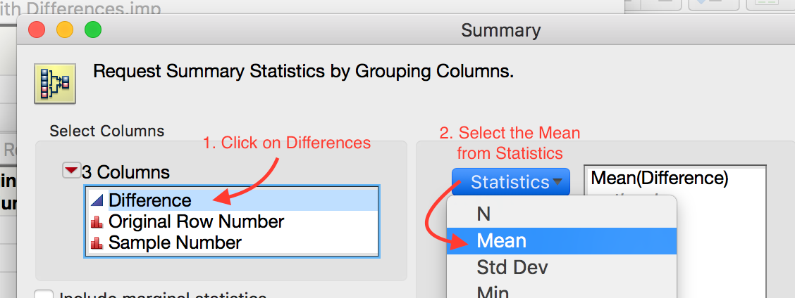
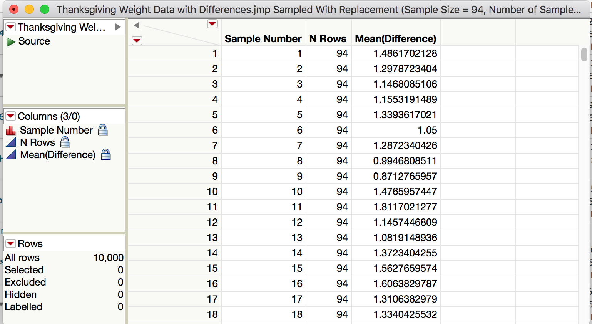
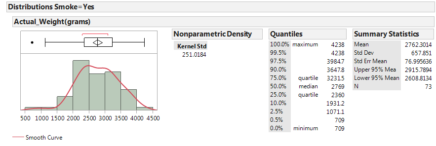
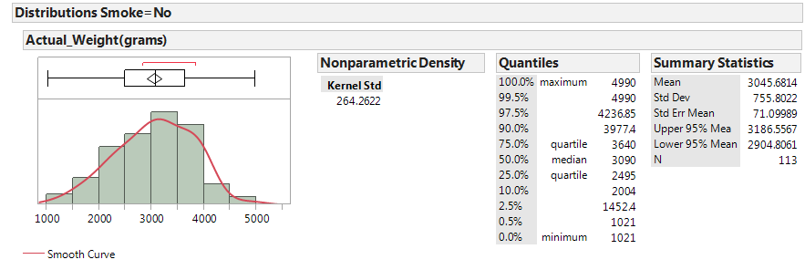
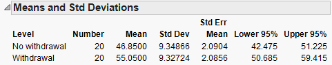

7. Comparing a Numerical Variable Across Two Groups¶
For paired data, we subtract each pair, then compute the mean of these differences. Consequently, the hypotheses for paired data will revolve around the population mean of the differences between all pairs, which is denoted mu_{diff}.
7.1. Paired Versus Unpaired Data¶
In this chapter, we will be comparing groups using two different types of data, paired or unpaired. Data is paired if we can pair each measurement of one variable with exactly one measurement of the other. Typical designs that result in paired data are before-and-after studies, where measurements are taken before a treatment and then again after the treatment. Another example of a design that results in paired data is pairing similar individuals, say siblings or identical twins, and applying a different treatment to each member of the pair.
Data is ungrouped when there is no way to pair specific measurements from each group. Ungrouped data is most commonly acquired through randomization, be it either two different random samples or randomly assigned treatments.
7.1.1. Finding the Null and Alternative Hypotheses¶
When running hypothesis test to compare to groups, it is natural to set the null hypothesis to represent no difference. As our statistic, the mean, is quantitative, “no difference” means (a) we subtracted two values (in some way) and (b) the result was 0. The difference between paired and unpaired data comes in how we subtract.
For paired data, we subtract each pair, then compute the mean of these differences. Consequently, the hypotheses for paired data will revolve around the population mean of the differences between all pairs, which is denoted
On the other hand, for unpaired data first compute the mean of each group, the we subtract these means. In this case, the hypotheses will revolve around the difference population mean of the differences between all pairs, which is denoted
where the subscripts (1 and 2) represent the group number and can be replaced with the name of the group. For example, if we were comparing a treatment group to a control group, we might use
When determining the alternative hypothesis, it is important to consider the research question and the direction of subtraction. Suppose that we have the following research question.
Research question:
Is there evidence that the treatment resulted in values that were smaller than the control group?
Since we computed treatment - control, smaller numbers for the treatment would result in negative numbers (i.e. small - large would be negative). Consequently, the hypotheses would be given by
Now suppose you have a classmate that chose to compute
In this case, the research question would result in positive values (i.e. large - small would be positive) and the hypotheses become
This same logic applies to the paired test as well.
Note
Always consider the research question AND the direction of subtraction when determining the hypotheses when comparing two groups.
7.2. Getting Started with Paired Data¶
The hypothesis testing procedures presented in this section should be used when the observations are paired and the two groups being compared are dependent. Whether or not the observations are paired/dependent is determined by how the data are collected. To see this, consider the following example.
7.2.1. Example 6.1: Thanksgiving Holiday Weight Gain¶
In a 2006 study published in Nutrition Journal, researchers were interested in assessing potential changes that occur in body weight during the Thanksgiving holiday break in college students. This paper’s abstract indicates that “a total of 94 college students reported to the human body composition laboratory at the University of Oklahoma following a 6-hour fast with testing occurring prior to, and immediately following the Thanksgiving holiday break. Body weight was assessed using a balance beam scale while participants were dressed in minimal clothing.”
Source:
Hull et al. The Effects of the Thanksgiving Holiday on Weight Gain. Nutrition Journal 2006, 5:29; doi:10.1186/1475-2891-5-29.
Research Question:
On average, does body weight of college students increase over the Thanksgiving holiday break?
Questions:
- What is the response variable of interest?
- What is the predictor variable of interest?
The raw data from this study were not available; however, the data in the file ThanksgivingWeightData.jmp are similar to the actual results obtained by the researchers. A portion of these data is shown below:

Questions:
- What can be said about the weight of Subject #1 as compared to Subject #7, for example, regardless of whether the data were collected before or after Thanksgiving?
Note
For these data, the first pre-weight is related to the first post-weight (the two measurements were made on the same person). Thus, these two samples are dependent.
In other words, some of the variability in the responses might be due to differences between time periods (before vs. after), but much of the variability in the observations is likely due to differences between people! So, to control for this variability in weights from person to person (which will help us isolate the effect of Thanksgiving break), we will work with the DIFFERENCES on each subject, instead. This will remove the structure of dependence between the pre- and post-Thanksgiving groups and will control for the fact that some people, in general, tend to weigh more (or less) than others. In the end, this helps us to isolate the effect of Thanksgiving break (i.e., before vs. after).
7.2.2. Calculating the Difference in JMP¶
First, open the file called ThanksgivingWeightData.. To calculate the difference, create an additional column (double click on empty column next to “‘Post Weight”) and title it “Difference.” Right-click on the new column header and select Formula.

In the edit window, tell JMP to calculate the difference as follows:
Click Apply and then OK, and JMP returns the following (only the results for the first 10 subjects are shown below):

Questions:
- What does a positive difference of 3.9 indicate?
- What does a difference of -1.9 indicate?
To determine what the average difference is, we can analyze the distribution of the differences using the descriptive methods discussed in Chapter 4:
Questions:
- What is the average difference of the 94 subjects? Interpret this value.
- If Thanksgiving break had no effect on body weight, what would you expect these differences to be, on average?
- If the research hypothesis is correct (body weights of college students increase over Thanksgiving break), what would you expect these differences to be, on average?
Note
Note that these differences are represented by a single column of data. So, instead of viewing this as a problem involving a categorical predictor and a numerical response, you could view this as a problem involving a single numerical variable – the differences! Therefore, the hypothesis testing procedure is exactly the same as the procedure for testing a single population mean we discussed in Chapter 5.
That is, the parameter of interest is the true population average of the differences which we will represent by \(\mu_{difference}\).
- Our best estimate for this parameter is the sample mean of the observed differences. We’ll call this quantity \(\bar{x}_{difference}\).
- The sample standard deviation of the differences will be denoted by \(s_{difference}\)
7.2.3. Bootstrap Confidence Interval for Paired Data¶
In this section, we will look at analyzing paired tests using a familiar tool: the bootstrap. The next section will cover using the tools on the StatKey website to construct bootstrap confidencentervals for paired data.
7.2.4. Bootstrap Confidence Interval for Paired Data with StatKey¶
The following video will illustrate how to use the bootstrap to construct a confidence interval for the average of the differences between pairs. In the video, we will also look at interpreting the meaning of the resulting interval, which requires thinking of the numbers as the result of subtraction.
7.2.5. Bootstrap Confidence Interval with JMP (Optional)¶
While we will primarily use StatKey to construct our bootstrap intervals, we can also use JMP to perform the bootstrap. To create a bootstrap sample in JMP, you will need to install the JMP add-in titled SampleWithReplacement v0.14.jmpaddin. Download and double click the file. You can now sample with replacement by going to Add-Ins > Sample with Replacement > Sample Now. Take a bootstrap sample of the differences using this add-in as shown below.
The result in a new table that contains the bootstrap sample of the differences. Compute the mean and standard deviation of this sample use Analyze > Distribution.

Task 1: Use JMP to take a few bootstrap samples.
Take 10000 bootstrap samples.

Compute the bootstrap mean difference for each sample and store these means in a new data table.

 

Analyze the distribution.


Compute a 95% confidence interval for the mean difference between the pre- and post-Thanksgiving weights. Paste a screen shot below and construct an appropriate sentence for this interval.

“We are 95% confident that the mean weight gain over Thanksgiving break for all college students is between 0.66 lb. and 1.76 lb.”
Based on this interval, what can we confidently say about the differences between pre-and post-Thanksgiving weights? Are we confident that there is, on average, weight gain? Explain.
Since the interval is positive and all of the values are larger than 0.65lb., we are confident that there is positive weight gain that is at least 0.65 lb.
7.3. Using the Bootstrap to Test a Hypothesis About Paired Data¶
Note that these differences are represented by a single column of data. So, instead of viewing this as a problem involving a categorical predictor and a numerical response, you could view this as a problem involving a single numerical variable – the differences! That is, the parameter of interest is the true population average of the differences which we will represent by μdifference.
- Our best estimate for this parameter is the sample mean of the observed differences. We’ll call this quantity.
- The sample standard deviation of the differences will be denoted by sdifference.
Before we discuss using a bootstrap sample to run a hypothesis test, let’s set up the null and alternative hypothesis for these data. (For convenience, the research question is given below.)
Research Question:
On average, does body weight of college students increase over the Thanksgiving holiday break?
Step 1: Set up the null and alternative hypotheses
Notice that we subtracted \(After - Before\). If the research hypothesis is true, then this value will be positive, i.e. larger than 0. Thus our hypotheses are as follows.
\[\begin{split}H_0: \mu_{diff} = 0\\ H_a: \mu_{diff} > 0\end{split}\]
Note
To correctly determine the direction of the alternate hypothesis, you need to consider both the research question and the order in which we subtracted.
Recall that we run a hypothesis test by performing the following two steps.
- Simulate the null hypothesis
- Determine if our statistic is unusual given this null distribution.
In this case, the null distribution is the no average weight gain distribution. To use the bootstrap distribution to conduct a hypothesis test, we shift the distribution to be centered at the correct value, as described below.
Steps in a Bootstrap Hypothesis Test
To use the bootstrap to simulate this distribution, we will need to shift the mean of our data to simulate no weight gain. This is done by performing the following steps.
Step 1: Make a new column of differences by subtracting the original mean difference from the original differences. (You should verify that the resulting column has a mean of 0.)
Step 2: Take many bootstrap samples from this theoretical column to simulate the null distribution. For each sample compute the bootstrap mean.
Step 3: Use the resulting distribution to compute a p-value for the original statistic and make the appropriate conclusion to complete the testing process.
Luckily, there is a nice JMP add-in that automates this process. Please download and install the Randomization Testing Beta 3.jmpaddin
Let’s apply this process to the Thanksgiving weight gain data. We will use a nice add-in to JMP that automates these steps for use. To use this add-in, we need to save our data set with the differences.

Now run the randomization addin by
going to Add-Ins > Randomization Testing
Click Use Other Data and open your JMP file with differences.
Select the differences column, set the simulation controls to simulate 1000 samples by Resampling with Mean = 0 (The null mean).
Pick the correct tail for this test in Test Selection and note the p-value.

p-value = 0
Step 3: Write a conclusion in the context of the problem
As the p-value (0) is lower than 0.05 (5%), we find that our statistic is unusually large. Thus, we have strong evidence supporting the claim that there is an average positive weight gain for all college students over Thanksgiving break.
7.3.1. Paired T-Test in JMP¶
Recall that we used a t-confidence interval in JMP as an alternative to the bootstrap interval. In the same way, we can use a t-test in JMP as an alternative to the bootstrap test. We first assess the normality of the data set. We can use the JMP test if (a) the original differences are normal or (b) the sample size is large enough (at least 30).
For the Thanksgiving weight gain data, run a JMP t-test by replacing our work that used the bootstrap with the following these steps (using JMP).
Step 2: Make a difference column and assess the normality of the differences

Step 3: Find the t-statistic and the p-value
To calculate this associated p-value in JMP, add the test probability to the difference distribution.

{kind=link}
{kind=link}
{kind=link}
{kind=link}
{kind=link}
{kind=link}
{kind=link}
{kind=link}
{kind=link}
{kind=link}
{kind=link}
{kind=link}
{kind=link}
{kind=link}
Note
When reading the t-test output from JMP, the picked the p-value based on
- Prob > |t| is for a two-tail test.
- Prob > t is for a greater than test.
- Prob < t is for a less than test.
7.4. Using the Bootstrap to Comparing Two Unpaired Groups¶
In Chapter 5, we considered inference for a single population mean. Then, in the first part of Chapter 6 we extended these ideas so that comparisons could be made between two groups. Such comparisons were made using differences because the observations in the two groups were related, or dependent.
In this section, we will consider making comparisons between two groups when the observations in one group are independent of the observations in the other group. The methodologies considered here are a bit more involved because it no longer makes sense to simply work with differences. Consider the following example.
7.4.1. Bootstrap Confidence Intervals for Unpaired Data¶
Again, we will start by applying the bootstrap to get a confidence interval and use the resulting interval to draw conclusions about the research questions. The key to applying the bootstrap to unpaired groups is taking two bootstrap samples, one for each group. This is discussed in the following video.
7.4.2. Example 6.5: Smoking and Birth Weight¶
A study was conducted in which the relationship between smoking and birth weights of babies was considered. The data can be found in the file LowBirth.JMP, a portion of which is shown below.
{kind=link}
Note
The first observation for a nonsmoker is in NO WAY related to the first observation for a smoker. Therefore, these groups are independent.
Next, let’s examine birth weight across the two groups: smokers and nonsmokers.
|  |  |
{kind=link}
{kind=link}
In JMP, we can compare the distributions by selecting Analyze > Fit Y by X. Place the categorical variable (Smoke) in the X, Factor box, and place the numerical variable of interest (Actual_Weight) in the Y, Response box. Select the “Display Options” menu from the red drop-down arrow to display the boxplots and mean diamonds.
{kind=link}
{kind=link}
Questions:
- Identify the following sample statistics from the JMP output:
{kind=link}
- We are interested in the true difference between these two population means. Based on the data, what is your best guess for this difference, and what does it indicate about birth weights for smokers compared to nonsmokers?
- If you were to take another sample, is your “best guess” from the previous question likely to change? Explain.
Since the difference will change from sample to sample, in order to make valid inferences about the true population difference, we must first understand how the difference in sample means is expected to change from sample to sample. That is, we must determine what differences in means are likely to happen by chance when taking random samples from populations with the same mean. The following illustration in Tinkerplots gives us some insight into this.
{kind=link}
7.4.3. Bootstrap Test for Two Independent Means¶
Researchers at Pennsylvania State University investigated whether time perception, a simple indication of a person’s ability to concentrate, is impaired during nicotine withdrawal. Twenty smokers were randomly assigned to a 24-hour smoking abstinence and were asked to estimate how much time had passed during a 45-second period. Another 20 smokers were randomly assigned to a group which was not forced to abstain from nicotine; they were also asked to estimate how much time had passed during a 45-second period. Suppose the resulting data on perceived elapsed time (in seconds) were analyzed as shown below (these results are artificial but are similar to the actual findings). The data can be found in the file Nicotine_all.JMP.
Research Question:
Do those smokers suffering from nicotine withdrawal tend to believe that more time has elapsed than do those not suffering from nicotine withdrawal?
- What is the response variable in this study?
- What is the predictor variable in this study?
- Explain why the null hypothesis would be \(H_{0}:\mu_{\text{no}} - \mu_{\text{with}} = 0\)
To use the bootstrap distribution to run a hypothesis test, we need to generate the bootstrap distribution then move the distribution so that the mean is centered at the hypothetical mean.
In JMP, we can use the bootstrap to perform a test for the difference in means, by following these steps.
Bootstrap Test in JMP
Save the data somewhere that is easy to access.
Open the Randomized Test add-in, click Use Other Data, and open the Nicotine_all.jmp data file.


Highlight the Y and X variables.

Generate the bootstrap distribution centered at 0. This is due to the fact that we are testing to see if there is a difference between the groups, and consequently the null hypothesis will represent “no difference.”
Note the direction of subtraction on the right hand side. We will need to make sure our alternate hypothesis’s direction matches this subtraction.

At this point we can determine the null and alternative hypothesis, (including the correct order of subtraction.) We do this by considering the research hypothesis in light of the order of subtraction. In this case, the research hypothesis has :math”mu_{with} bigger than \(\mu_{no}\), so \(H_{a}:\mu_{\text{no}} - \mu_{\text{with}} < 0\).
Pick and record the correct p-value for this test.

p-value =
{kind=link}
Question:
- Based on this p-value, write the correct conclusion for this test.
7.4.4. Characteristics of the Sampling Distribution for the Difference in Means¶
The illustration in Tinkerplots helps us understand the intuition behind inference for a difference in means, but we don’t really need Tinkerplots to determine the characteristics of a distribution of differences in means. Instead, we can use what statisticians discovered long ago: as long as the samples are independent, the sampling distribution for the difference in means can be described as follows.
- The sampling distribution is centered around \(\mu_1 - \mu_2\).
- The standard deviation of our sampling distribution (i.e., standard error) is given as follows:
- The shape of the sampling distribution is approximately normal if (1) both sample sizes are “sufficiently large” OR (2) if both original populations are normally distributed.
Given these characteristics, the test statistic we will use when testing for differences in two population means for INDEPENDENT samples is as follows:
This test statistic follows a t-distribution with the following degrees of freedom:
Therefore, as long as it is reasonable to assume the shape of the distribution of differences in means is approximately normal (see #3 above), we can use the t-distribution to find our p-value. This procedure is typically referred to as the two-sample t-test.
7.5. Testing for a Difference in Between Two Unpaired Groups¶
Back to Example 6.5: Carry out the hypothesis test associated with the following research question: Is the average birth weight lower when mothers are classified as smokers?
Step 0: Check the assumptions behind the test to be sure that the t-test is valid.
- Are the two groups independent? Explain.
- Are both sample sizes sufficiently large? If not, is it reasonable to assume that both populations are normally distributed?
{kind=link}
Step 1: Convert the research question into H0 and Ha.
H0:
Ha:
Step 2: Calculate the test statistic from your data.
To do this in JMP, click on the red drop-down arrow next to “One-way Analysis...” and select t-test.

JMP returns the following:
{kind=link}
Verify the value of the test statistic in JMP:
Step 3: Determine the p-value.
p-value:
Step 4: Write a conclusion in terms of the original research question.
“We have evidence that the average birth weight is lower when mothers are classified as smokers (p-value = .0038).”
7.5.1. Constructing a Confidence Interval for the Difference in Means¶
Lower Endpoint =
Upper Endpoint =
We often write this confidence interval as:
Interpret the meaning of this 95% confidence interval:
7.5.2. Example 6.6: Time Perception¶
Recall the study conducted by researchers at Pennsylvania State University which investigated whether time perception, a simple indication of a person’s ability to concentrate, is impaired during nicotine withdrawal. This study was discussed in Chapter 5. Twenty smokers were randomly assigned to a 24-hour smoking abstinence and were asked to estimate how much time had passed during a 45-second period. Another 20 smokers were randomly assigned to a group which was not forced to abstain from nicotine; they were also asked to estimate how much time had passed during a 45-second period. Suppose the resulting data on perceived elapsed time (in seconds) were analyzed as shown below (these results are artificial but are similar to the actual findings). The data can be found in the file Nicotine_all.JMP.
Research Question:
Do those smokers suffering from nicotine withdrawal tend to believe that more time has elapsed than do those not suffering from nicotine withdrawal?
Questions:
- What is the response variable in this study?
- What is the predictor variable in this study?
The data can be summarized using JMP by selecting Analyze > Fit Y by X and placing the predictor (i.e., explanatory) variable in the X, Factor box and the response in the Y, Response box. Then, use the Display Options menu from the red drop-down arrow to add the boxplots and mean diamonds.
{kind=link}
It is clear that the SAMPLE of smokers suffering from nicotine withdrawal has a larger mean perceived elapsed time than those not suffering from withdrawal. However, to determine whether there is a difference in the POPULATION means, we will carry out a hypothesis test.
Step 0: Check the assumptions behind the test to be sure that the test is valid.
- Are the two groups independent?
- Are both sample sizes sufficiently large? If not, is it reasonable to assume that both populations are normally distributed?
{kind=link}
Step 1: Convert the research question into H0 and Ha
H0
Ha
Step 2: Calculate a test statistic from your data.
Verify the value of the test statistic from JMP: 
\[\begin{split}SE_{\bar{x}_1-\bar{x}_2} = \sqrt{\frac{s_1^2}{n_1}+ \frac{s_2^2}{n_2}}= \\ t = \frac{(\bar{x}_1 - \bar{x}_2) - (\mu_1 - \mu_2)}{SE_{\bar{x}_1-\bar{x}_2}}=\end{split}\]Recall that this test statistic comes from a t-distribution w
\[df = \frac{\left(\frac{s_1^2}{n_1}+ \frac{s_2^2}{n_2}\right)^2} {\frac{\left(\frac{s_1^2}{n_1}\right)^2}{n_1 - 1}+ \frac{\left(\frac{s_2^2}{n_2}\right)^2}{n_2 - 1}}=37.9\]
{kind=link}
{kind=link}
Step 3: Determine the p-value
Step 5: Write a conclusion in terms of the original research question.
“The study provides evidence that the average perceived elapsed time is higher for those smokers suffering from nicotine withdrawal than for those not suffering from nicotine withdrawal (p-value = .0042)
Finally, construct a 95% confidence interval for the difference in means:
Lower Endpoint =
Upper Endpoint =
Again, we often write this confidence interval as:
Interpret the meaning of this confidence interval:
Example 6.7: Tree Canopy Area
Consider the data found in the file NYC_Trees.JMP. Suppose you want to compare the canopy area of the two types of trees. Is the average canopy area of a Honey Locust different from the average canopy area of a Norway Maple? The data are summarized as follows:
{kind=link}
It is clear that the SAMPLE of Norway Maple trees has a higher mean canopy area than the SAMPLE of Honey Locust trees. However, to determine whether the POPULATION mean canopy areas differ between the two groups, we will carry out a hypothesis test.
Step 0: Check the assumptions behind the test to be sure that the test is valid.
- Are the two groups independent?
- Are both sample sizes sufficiently large? If not, is it reasonable to assume that both populations are normally distributed?
{kind=link}
Step 1: Convert the research question into H0 and Ha
H0:
Ha:
Step 2: Calculate a test statistic from your data.
Step 3: Determine the p-value.
p-value =
Step 4: Write a conclusion in terms of the original research question.
Finally, we can construct a confidence interval for the difference in means:

Lower Endpoint =
Upper Endpoint =
This confidence interval can also be written as:
Interpret the meaning of this 95% confidence interval: